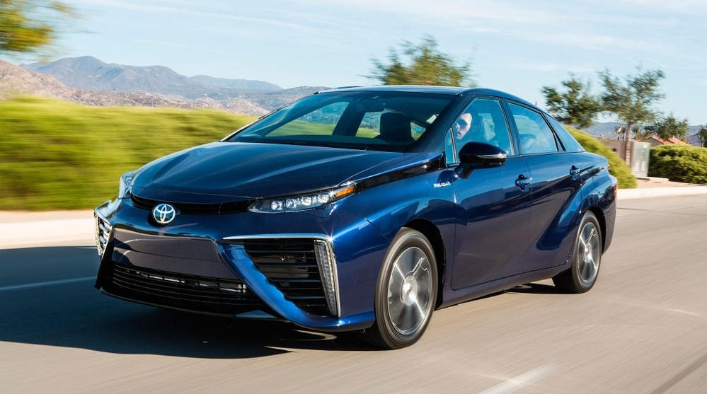

| Существует огромное множество различных автомобилей. Они отличаются по нескольким факторам - Тип кузова, Потребляемое топливо, Вид трансмиссии. Главная проблема большинства автомобилей - они причиняют большой вред окружающей среде. Но последнее время производители стали заботиться об экологии и начали производить "чистые" продукты. Такие автомобили не выбрасывают вредный CO2, и более дешёвые в эксплуатации. Но помимо таких очевидных плюсов есть и менее очевидные минусы. На данном сайте вы можете ознакомиться с основными особенностями и отличиями современных автомобилей. |  |
История появления автомобилей Назначения автомобилей "Грязные" автомобили: Бензиновые Дизельные "Чистые" автомобили: Электрические Водородные Гибридные Биотопливные |